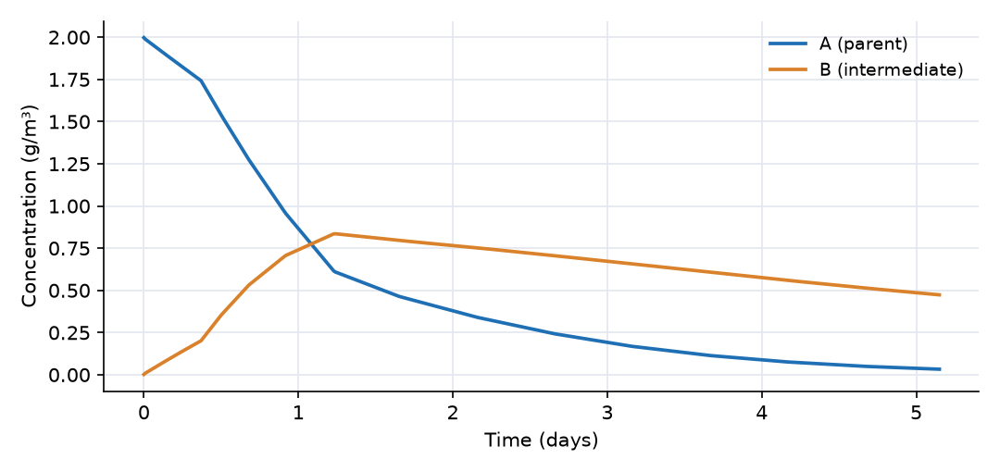
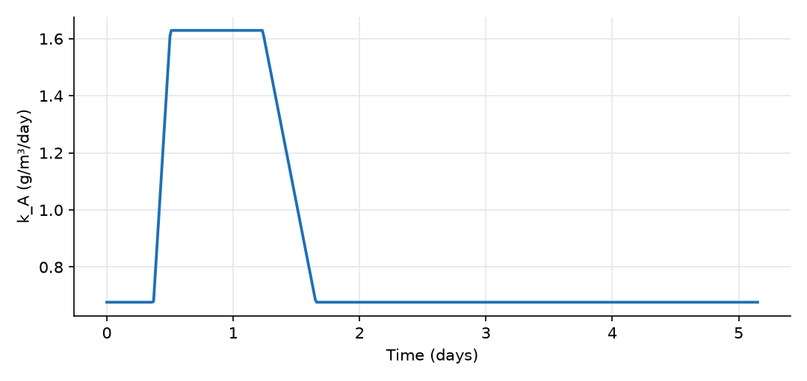

What this model represents
A single, closed, well-mixed batch reactor holding two dissolved species linked in a chain:
A → B → (removed)
This pattern appears in many water-quality problems. Examples include a pesticide breaking down into a more persistent metabolite, nitrogen moving from ammonium to nitrite, or a chlorinated solvent dechlorinating step by step. The model has no transport, so it isolates the reaction kinetics. It is a natural starting point before reactions are placed in a network of blocks and links.
How it works
Each reaction has a rate expression, which OpenHydroQual evaluates in every block where the constituents are present. Each reaction also has a set of stoichiometric coefficients, which say how much each constituent changes per unit of reaction. For a block of volume V, the mass balance of each constituent is
d(V·Cᵢ)/dt = V · Σⱼ νᵢⱼ · rⱼ
where νᵢⱼ is the stoichiometric coefficient of constituent i in reaction j and rⱼ is the rate of reaction j. With the coefficients set in this model:
| Reaction | Rate rⱼ | ν for A | ν for B |
|---|---|---|---|
| A_to_B | k_A·A / (K_s + A) | −1 | +Y_B |
| B_loss | k_B·B² | 0 | −1 |
so that
dA/dt = −k_A·A/(K_s + A) dB/dt = Y_B·k_A·A/(K_s + A) − k_B·B²
Stoichiometric coefficients can be numbers or names of reaction parameters. Here the yield Y_B is a parameter, so it can be changed or calibrated in one place.
Temperature correction. Every reaction parameter can follow a temperature time series:
value = base_value · θ^(T − T_ref)
Here only k_A is linked to temperature.txt (θ = 1.05, T_ref = 20 °C). It therefore ranges from about 0.68 at 12 °C to 1.63 at 30 °C. The other parameters use θ = 1, which makes them independent of temperature.
What to look for in the results
- The warm pulse (days 0.5 to 1.5). The decline of A steepens visibly as k_A more than doubles.
- Rise and fall of B. B peaks shortly after the warm period. After the peak, B declines more slowly than A, because second-order loss weakens as B becomes dilute.
- Saturation. At t = 0, A (2 g/m³) is well above K_s (0.6 g/m³), so A degrades at close to its maximum rate. Late in the run, A ≪ K_s and the decay becomes nearly exponential, which shows as a straight line on a log scale.
- Mass accounting. Because Y_B < 1, the total A + B is not conserved. The missing 20% represents mass converted to products that are not tracked.
Assumptions and limitations
- The reactor is perfectly mixed and closed: no inflow, outflow or volume change.
- Temperature affects only k_A. Temperature is prescribed from data, not computed from a heat balance.
- Rate expressions are written in concentration units (g/m³), so each rate is in g/m³/day.
Model diagram
Hover a block or link to see its name and type. Arrows show the positive flow direction.
Components
Click a component to see every property set in the model file, with units and meaning.
Blocks 1
Storage compartments: each holds water (and dissolved or particulate mass) and has a state that evolves in time.
Batch_ReactorReactor · mass_transferA closed, well-mixed vessel of 10 m³ with no inflow or outflow. All change in concentration is caused by the two reactions.
Reactor: Reactor
| Property | Value | Unit | Meaning |
|---|---|---|---|
| A: Concentration | 2 | g/m3 | Computed as mass/(Storage+0.00001) |
| B: Concentration | 0 | g/m3 | Computed as mass/(Storage+0.00001) |
| Initial Storage | 10 | m3 | |
| Bottom elevation | 0 | m | |
| Constant Inflow | 0 | m^3/day |
Constituents 2
Substances or particles carried by the water.
AConstituentThe parent compound, for example an organic contaminant that is biodegraded. Starts at 2 g/m³.
Constituent: Chemical constituent
| Property | Value | Unit | Meaning |
|---|---|---|---|
| Concentration | 0 | g/m^3 | Computed as mass/(Storage+0.00001) |
| Constant Inflow concentration | 0 | g/m^3 | |
| Diffusion Coefficient | 0 | m^2/s | |
| Dispersivity | 0 | m | |
| Stoichiometric Constant | 0 |
BConstituentAn intermediate (daughter) product formed from A. Starts at zero.
Constituent: Chemical constituent
| Property | Value | Unit | Meaning |
|---|---|---|---|
| Concentration | 0 | g/m^3 | Computed as mass/(Storage+0.00001) |
| Constant Inflow concentration | 0 | g/m^3 | |
| Diffusion Coefficient | 0 | m^2/s | |
| Dispersivity | 0 | m | |
| Stoichiometric Constant | 0 |
Reaction parameters 4
Named coefficients used in reaction rate expressions.
k_AReactionParameterMaximum degradation rate of A (g/m³/day at 20 °C). Corrected for temperature using the temperature.txt record and θ = 1.05.
temperature.txt record and θ = 1.05.ReactionParameter: Reaction Parameter
| Property | Value | Unit | Meaning |
|---|---|---|---|
| Arrhenius temperature correction factor | 1.05 | ||
| Value | 1 | ||
| Reference Temperature | 20 | ||
| Temperature time-series (degrees Celsius) | temperature.txt |
k_BReactionParameterSecond-order rate constant for loss of B (m³/g/day).
ReactionParameter: Reaction Parameter
| Property | Value | Unit | Meaning |
|---|---|---|---|
| Arrhenius temperature correction factor | 1 | ||
| Value | 0.5 | ||
| Reference Temperature | 20 |
K_sReactionParameterHalf-saturation concentration of A (g/m³). Below K_s the A reaction is close to first order; well above it the rate approaches k_A.
ReactionParameter: Reaction Parameter
| Property | Value | Unit | Meaning |
|---|---|---|---|
| Arrhenius temperature correction factor | 1 | ||
| Value | 0.6 | ||
| Reference Temperature | 20 |
Y_BReactionParameterYield of B, in grams of B formed per gram of A degraded.
ReactionParameter: Reaction Parameter
| Property | Value | Unit | Meaning |
|---|---|---|---|
| Arrhenius temperature correction factor | 1 | ||
| Value | 0.8 | ||
| Reference Temperature | 20 |
Reactions 2
Transformations among constituents, each with a stoichiometry and a rate expression.
A_to_BReactionDegradation of A into B, rate k_A·A/(K_s + A).
Reaction: Chemical reaction
(k_A*A/(K_s+A))| Constituent | Stoichiometric coefficient |
|---|---|
| A | -1 |
| B | Y_B |
B_lossReactionSecond-order removal of B (for example dimerization or precipitation), rate k_B·B².
Reaction: Chemical reaction
(k_B*B^2)| Constituent | Stoichiometric coefficient |
|---|---|
| B | -1 |
Input files
temperature.txt | Water temperature (°C) versus time (days). A warm period of 30 °C from day 0.5 to day 1.5 interrupts a baseline of 12 °C. Two columns, comma separated, no header. |
Simulation settings
| Start time | 0 |
| End time | 5 |
| Initial time step | 0.01 |
| Write interval (steps) | 10 |
Results
Produced by running the downloaded model unchanged.

